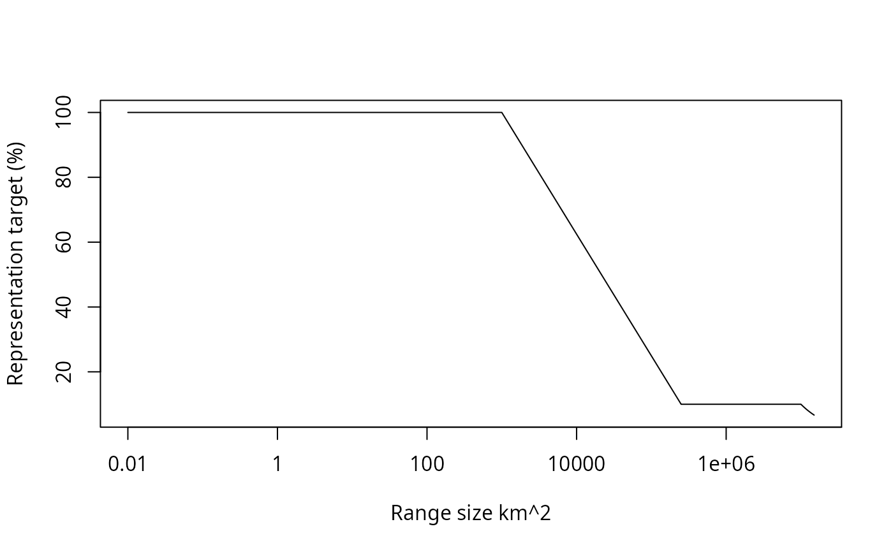
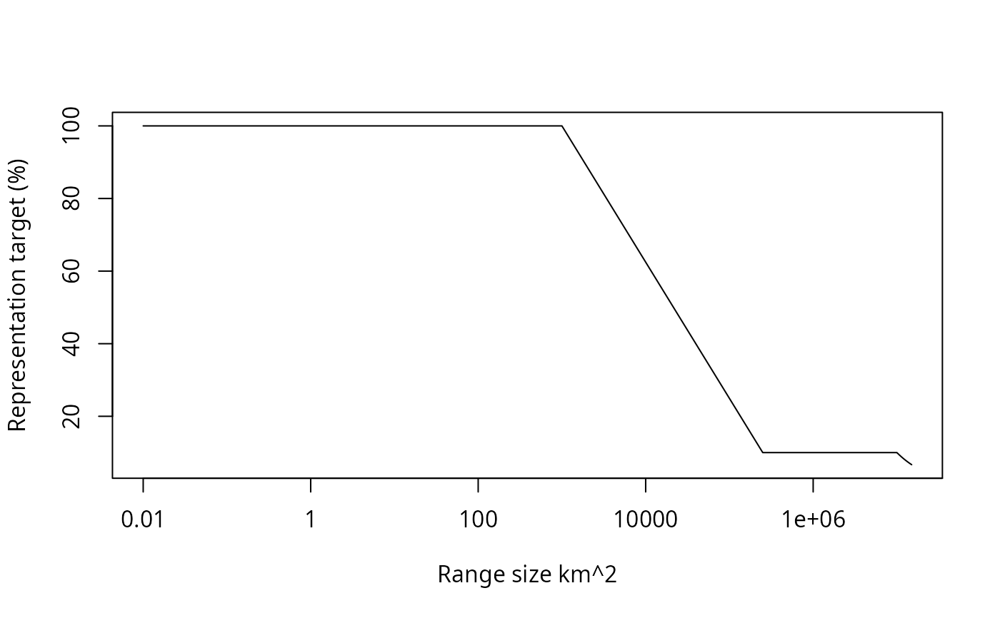

Log-linearly interpolate values between two thresholds.
Usage
loglinear_interpolation(
x,
coordinate_one_x,
coordinate_one_y,
coordinate_two_x,
coordinate_two_y
)Details
Values are log-linearly interpolated at the x-coordinates
specified in x using the lower and upper coordinate arguments to
define the line. Values lesser or greater than these numbers are assigned
the minimum and maximum y coordinates.
Examples
# \dontrun{
# create series of x-values
x <- seq(0, 1000)
# interpolate y-values for the x-values given the two reference points:
# (200, 100) and (900, 15)
y <- loglinear_interpolation(x, 200, 100, 900, 15)
# plot the interpolated values
plot(y ~ x)
# add the reference points to the plot (shown in red)
points(x = c(200, 900), y = c(100, 15), pch = 18, col = "red", cex = 2)
 # this function can also be used to calculate representation targets
# following Rodrigues et al. (2014). For example, let's say that
# we had a set of species we were interested in calculating representation
# targets for and we had information on their range sizes (in km^2).
spp_range_size_km2 <- seq(0.01, 15000000, by = 100)
# we can now use this function to calculate representation targets
# (expressed as a percentage of the species' range sizes) using
# the thresholds and cap sizes reported by Rodrigues et al. 2014
spp_target_percentage_rodrigues <- loglinear_interpolation(
x = spp_range_size_km2,
coordinate_one_x = 1000,
coordinate_one_y = 1,
coordinate_two_x = 250000,
coordinate_two_y = 0.1
) * 100
# it is also common to apply a cap to the representation targets,
# so let's apply the cap these targets following Butchart et al. (2015)
spp_target_percentage_butchart <- ifelse(
spp_range_size_km2 >= 10000000,
(1000000 / spp_range_size_km2) * 100,
spp_target_percentage_rodrigues
)
# plot species range sizes and representation targets
plot(
spp_target_percentage_butchart ~ spp_range_size_km2,
xlab = "Range size km^2" , ylab = "Representation target (%)", type = "l"
)
# this function can also be used to calculate representation targets
# following Rodrigues et al. (2014). For example, let's say that
# we had a set of species we were interested in calculating representation
# targets for and we had information on their range sizes (in km^2).
spp_range_size_km2 <- seq(0.01, 15000000, by = 100)
# we can now use this function to calculate representation targets
# (expressed as a percentage of the species' range sizes) using
# the thresholds and cap sizes reported by Rodrigues et al. 2014
spp_target_percentage_rodrigues <- loglinear_interpolation(
x = spp_range_size_km2,
coordinate_one_x = 1000,
coordinate_one_y = 1,
coordinate_two_x = 250000,
coordinate_two_y = 0.1
) * 100
# it is also common to apply a cap to the representation targets,
# so let's apply the cap these targets following Butchart et al. (2015)
spp_target_percentage_butchart <- ifelse(
spp_range_size_km2 >= 10000000,
(1000000 / spp_range_size_km2) * 100,
spp_target_percentage_rodrigues
)
# plot species range sizes and representation targets
plot(
spp_target_percentage_butchart ~ spp_range_size_km2,
xlab = "Range size km^2" , ylab = "Representation target (%)", type = "l"
)
 # plot species range sizes and representation targets on a log10 scale
plot(
spp_target_percentage_butchart ~ log10(spp_range_size_km2),
xlab = "Range size km^2" , ylab = "Representation target (%)",
type = "l", xaxt = "n"
)
axis(
1, pretty(log10(spp_range_size_km2)),
10^pretty(log10(spp_range_size_km2))
)

# }
# plot species range sizes and representation targets on a log10 scale
plot(
spp_target_percentage_butchart ~ log10(spp_range_size_km2),
xlab = "Range size km^2" , ylab = "Representation target (%)",
type = "l", xaxt = "n"
)
axis(
1, pretty(log10(spp_range_size_km2)),
10^pretty(log10(spp_range_size_km2))
)

# }